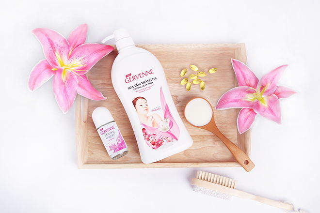

Muốn dưỡng trắng da, hội con gái cần hiểu rõ 5 nguyên nhân
khiến da sạm đen này
Sở hữu một làn da trắng sáng rạng ngời luôn là mong ước của hội con gái chúng mình. Và để
công cuộc dưỡng trắng da đạt được hiệu quả cao, hội con gái cần phải biết rõ đâu là tác nhân
khiến da kém trắng sáng.
1. Không chống nắng cho da mặt và da toàn thân
Ánh nắng mặt trời mang theo tia UVA và UVB là một trong những nguyên nhân hàng đầu khiến làn da
bị tổn thương. Theo một số nghiên cứu cho thấy, tia cực tím UVA và UVB từ mặt trời có thể dễ
dàng xuyên qua kính cửa sổ và cả quần áo, vải vóc, lớp mây mù… Vậy nên cho dù bạn có ngồi trong
xe hơi hay văn phòng, dưới bóng râm hay đi dưới trời âm u, thì làn da vẫn có khả năng bị tổn
thương và chịu nhiều vấn đề nghiêm trọng như: ung thư da, lão hóa sớm, khô da… Ngoài ra, các
nguồn sáng khác như ánh sáng từ màn hình thiết bị điện tử hoặc đèn neon cũng chứa nhiều các tia
UV khiến da sản sinh hắc sắc tố Melanin, làm da bị đen sạm.
Nếu không muốn làn da trở nên
đen sạm và nhanh lão hóa, hãy sử dụng kem chống nắng cho da mặt và da toàn thân mỗi ngày
2. Ô nhiễm môi trường
Từ trước đến nay, ô nhiễm môi trường, đặc biệt là ô nhiễm không khí thường được biết đến là mang
lại ảnh hưởng nghiêm trọng đối với sức khỏe. Thế nhưng hội con gái có biết rằng, ô nhiễm không
khí – đặc biệt là “sát thủ vô hình” mang tên bụi siêu mịn PM 2.5, cũng là một trong những nguyên
nhân hủy hoại làn da của bạn từng ngày. Bởi khi da tiếp xúc với các hạt bụi siêu mịn này, sẽ
khiến cấu trúc sợi collagen bị suy yếu, giúp các tạp chất bám vào da dễ dàng hơn và rất khó để
làm sạch. Từ đó hình thành các hắc sắc tố gây nám da, sạm da. Bên cạnh đó, ô nhiễm không khí còn
làm tăng gấp 2 lần tác động của tia UV lên da và làm cho da bị lão hóa sớm.
3. Bị stress thường xuyên
Khi đối mặt với stress, cơ thể sẽ tiết ra hormone cortisol – một loại nội tiết tố giúp chống lại
và kiểm soát tình trạng căng thẳng, từ đó phá vỡ sự liên kết của các sợi collagen và elastin
trên da, khiến da trở nên xỉn màu, sần sùi, khô ráp và đẩy nhanh quá trình lão hóa.
4. Không tẩy tế bào chết cho da
Việc không tẩy tế bào chết cho da thường xuyên sẽ khiến các lớp tế bào chết nằm lại trên bề mặt
da ngày lúc một dày hơn, làm da trở nên sạm đen, thô ráp và thiếu sức sống. Bên cạnh đó, quá
trình lưu thông máu và dưỡng chất dưới da cũng vì thế mà kém đi, cản trở quá trình tái sinh lớp
tế bào non, khiến da bị xỉn màu. Chính vì vậy, hãy thường xuyên tẩy tế bào chết cho cả da mặt và
da toàn thân ít nhất 2 lần/tuần để có được một làn da trắng sáng và mịn màng nhé!
5. Không sử dụng các sản phẩm dưỡng trắng da
Bên cạnh việc không chống nắng cho da hay các tác hại từ ô nhiễm môi trường và stress, thì các
sản phẩm dưỡng trắng da cũng là một trong những yếu tố ảnh hưởng đến công cuộc dưỡng da của hội
con gái. Chỉ sử dụng những loại sản phẩm chăm sóc da hay sữa tắm chỉ có tác dụng làm sạch thông
thường là không đủ để nuôi dưỡng một làn da trắng sáng rạng ngời. Lúc này, hội con gái có thể
thử qua những sản phẩm sữa tắm dưỡng trắng da hàng ngày, có chứa những thành phần mang lại hiệu
quả dưỡng trắng vượt trội và lành tính cho da như Sữa Dê hay Vitamin B3.

Những loại sữa tắm dưỡng trắng
da có chứa tinh chất Sữa Dê và Vitamin 3 là giải pháp hiệu quả và ít tốn kém, giúp bạn có
được một làn da trắng sáng và khỏe mạnh (Sản phẩm sử dụng trong hình: sữa tắm dưỡng trắng da
hương nước hoa Gervenne)
Các bạn gái có biết không, tinh chất từ Sữa Dê có chứa hàm lượng vitamin A rất cao (tới 47% so
với sữa bò) giúp nuôi dưỡng làn da trắng sáng và khỏe mạnh, tránh được các dấu hiệu lão hóa và
phục hồi các hư tổn. Còn về phía Vitamin B3 được đánh giá không chỉ có tác dụng khôi phục tế bào
da, giảm sự tác động của tia UV lên da, làm mờ vết thâm nám mà còn ngăn ngừa lão hóa, từ đó giúp
da trở nên sáng mịn và đều màu hơn.
Qua đây có thể thấy, công cuộc dưỡng trắng da của hội con gái chúng mình cũng thật lắm gian nan.
Tuy nhiên, nếu hiểu rõ nguyên nhân khiến da bị tổn thương và sạm màu, cũng như có được một quy
trình dưỡng da đúng đắn kết hợp với các sản phẩm dưỡng trắng phù hợp, bạn sẽ không phải lo làn
da của mình đối mặt với “kiếp đen sạm” trong tương lai!